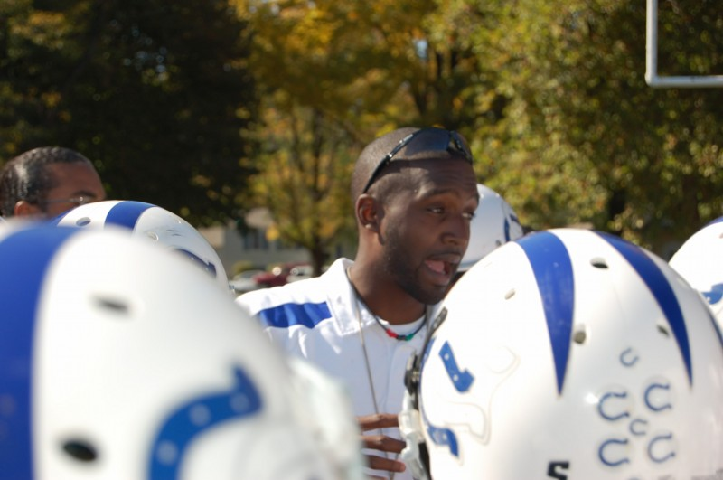

Coach Revels is an exuberant coach with a heart and passion for helping athletes reach their best. With his collegiate background in teaching and education, Coach Revels or “Coach Rev” as he is affectionately called by many of his players; firmly believes that education is the best way to succeed, on and off the field of play. As such, Coach Revels’ main focus is on teaching the game and its strategies. His philosophy is to “teach and re-teach” in order to best prepare athletes for competition. While success is the emphasis Coach Revels understands the importance of sportsmanship and healthy competitiveness and has found a way to motivate players without unnecessary pressure and stress. Coach Revels’ coaching style is based on accountability and team building. He tailors his techniques to the particular strengths and weaknesses of the athletes to put them in the best position to succeed. His extensive background with coaching players at every skill level given him a wide range of experiences and skills that help him implement his coaching methods to reach a variety of athletes. As an American Sports Education Program graduate, Coach Revels is certified to coach all sports and has a reputation of being very productive, knowledgeable and caring. Coach Revels believes that the personal relationship between player and coach is the key ingredient in a player reaching their maximum potential. He strives to do his best to make sure each and every athlete receives the proper amount of mentoring and coaching needed to succeed in sports and in life.
Coach Revels’ Coaching Philosophy:
“All my life I have been compelled to lead; be it in athletics or otherwise. Leadership is something that was birthed in me and has displayed itself throughout my life in many ways. Even as a child I always wanted to led, teach and help others reach their true potential. I truly believe that a person’s purpose can be found in their talents and passions. With that belief, I know teaching and leading is my purpose and as a coach I can exude these talents both on the field and as a role model. My philosophy is simple; ‘sports are played by teams made up of individuals that must sacrifice some personal goals for the greater good of all, while gaining something for themselves in the process.’ It is said that “there is no I in TEAM” and while I adhere to that ideology, I believe a team is made up of individual players who should all be respected and appreciated for the sacrifices they make. A coach should be an example of that sacrifice, and should be the most willing to sacrifice for those he or she coaches. True leadership is shown through example and giving what you are asking of those you lead to give. Being a pillar of stability on and off the field and a rock solid example of a program is the best way to show leadership to athletes. I am a great example of this type of leadership. I am an excellent coach and teacher and I care for each athlete respectfully and equally.”